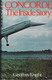
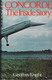

Voici une sélection de 88 ouvrages concernant de près ou de loin Concorde :


Les livres sur la naissance de Concorde :


 

Les controverses politiques autour de Concorde :


Les autres avions ayant entourés Concorde :


Les autres ouvrages dédiés à Concorde :